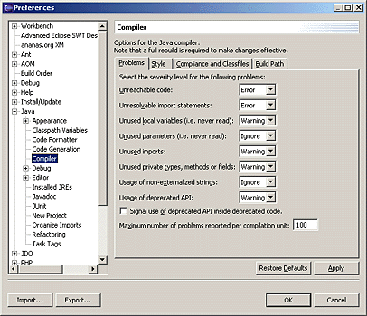
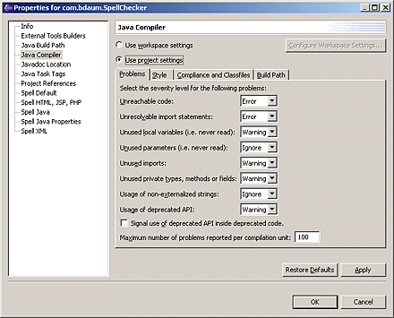
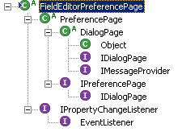
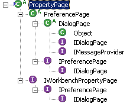
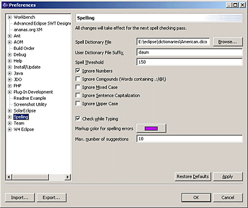
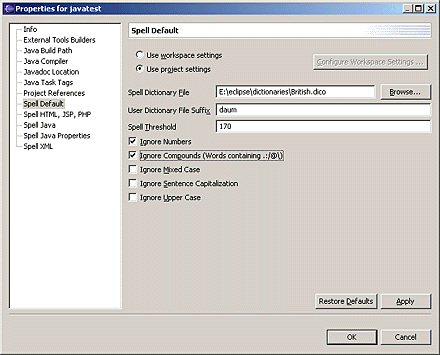

| Eclipse Corner Article |

Summary
A common problem in the implementation of applications is the implementation of project-specific properties that override workbench-wide preferences on project or file level. The naive approach is to implement these pages from scratch. However, writing the same code twice is a boring task and leads to increased maintenance efforts. In this article we show how existing preferences pages (with or without field editors) can be easily converted into pages that can act as both preference and property pages. We demonstrate this by implementing the abstract classFieldEditorOverlayPageproviding the necessary functionality.Berthold Daum, bdaum industrial communications
October 24, 2003
Implementing Preference Pages for Eclipse plug-ins is not a difficult
task, especially if you use field editors. Such preference pages are usually
implemented as subclasses of org.eclipse.jface.preference.PreferencePage
and org.eclipse.jface.preference.FieldEditorPreferencePage. There
are already two excellent articles on Eclipse Corner dealing with this
subject: Preferences in the
Eclipse Workbench UI by Tod Creasey and Simplifying
Preference Pages with Field Editors by Ryan Cooper. In this article I will
not go into details with the implementation of preference pages but assume that
you are already fairly familiar with standard implementation techniques of such
pages.
The problem that I want to discuss here begins after you already have implemented
preference pages for your plug-in. At some stage you notice that some or all of your plug-in
preferences should rather be project specific or even file specific. The usual
way to implement such project or file specific settings are Property Pages,
which usually are subclasses of org.eclipse.ui.dialogs.PropertyPage.
The Eclipse workbench already contains some examples of how property pages are used to override workbench settings on project level. One example are the Java
Compiler settings. These settings can be controlled in the workbench
preferences but can be overridden for each
Java project separately by project specific property pages.
| 
The Java compiler settings in the workbench preferences
|
| 
The Java compiler settings as a property page of a Java project |
As we see, both preference page and property page look, in fact, very similar. There are some differences, however, at the top of the page. Instead of the page description, the property page contains two radio buttons for toggling between workbench settings and project settings. It also features a button for direct access to the corresponding workbench preference page. But its main body (in this case the tabbed notebook) is identical with the main body of the corresponding preference page.
An obvious solution to this problem is to implement both pages from scratch. However, since the main body of the both pages is identical, this would result in a large portion of duplicated code, code that is subject to later maintenance and thus increases maintenance costs. After all, object-oriented programming is about reuse, isn't it?
Well, why don't we factor out the main body of both pages into a separate
class? This is actually the way in which both pages shown above are implemented.
(The tabbed notebook is implemented in JDT class CompilerConfigurationBlock.)
But this technique is not trivial. What I did not tell you is that preference
pages and property pages are based on different data models. Workbench preferences
are usually stored in plug-in specific but workbench-wide preference stores. Properties,
in contrast, are stored as resource related properties. The interface org.eclipse.core.resources.IResource
provides the necessary access method. When a resource is deleted, also its
properties cease to exist. This different way of data management would require
us to implement two variants of access routines, if we want to use preference
pages in the role of property pages. For property pages we would need to direct all field accesses
to the respective resource (project or file), for preference pages we would need
to direct all field accesses to the plug-in specific preference store. Unfortunately, this
strategy is not possible for preference pages utilizing field editors. Field
editors internally always access a preference store - we cannot tell them to
access resource properties instead. So we would need to re-implement the whole
property page - replacing the field editors with standard SWT widgets! Not very nice.
Fortunately, there is another solution and it works for field editors, too. To get to this solution we have to look at the inheritance trees of both field editor preference pages and property pages. (We will deal with the problem of field editor preferences pages first and will discuss "normal" preference pages later.)
|  |  |
Both types are extensions of the abstract class PreferencePage.
The class FieldEditorPreferencePage implements, in addition, the
interface IPropertyChangeListener, while the class PropertyPage
additionally implements the interface IWorkbenchPropertyPage. Since
the extension from PreferencePage to PropertyPage is
minimal (the implementation of IWorkbenchPropertyPage is
trivial), it makes sense to base our solution on class FieldEditorPreferencePage
and simply add the implementation of IWorkbenchPropertyPage.
But how do we deal with the problem of different data models for property
pages and preference pages? Since field editors can only access preference
stores, we simply create a temporary preference store (which we call overlay store
within this article)
when a property page is initialized. We implement this store by extending class PreferenceStore
but provide different semantics to its access methods. In particular, when
fetching a value from the store, we look into the resource properties first if
we can find an identically named value there. Only if such a value is not found,
we refer to the underlying workbench preference store. The save()
methods of this store have different semantics, too: they must store the values
contained in the overlay store into the resource properties instead of saving them as preferences. So,
our field editors have only to deal with a preference store and are perfectly
happy.
The class PropertyStore implements the overlay store and extends the class
PreferenceStore. Each instance of
PropertyStore represents the properties of a specific resource in context
of a specific
property page but as an incarnation of a property store. Because the store is
resource and page specific, we pass the  resource and a
resource and a  page identification in the constructor:
page identification in the constructor:
public class PropertyStore extends PreferenceStore {
 private IResource resource;
private IResource resource;
 private IPreferenceStore workbenchStore;
private IPreferenceStore workbenchStore;
 private String pageId;
private String pageId;
public PropertyStore(IResource resource,
IPreferenceStore workbenchStore,
String pageId) {
this.resource = resource;
this.workbenchStore = workbenchStore;
this.pageId = pageId;
}
We also pass the underlying  workbench preference store. When a preference value is not available as a
resource property value, we will route accesses through to this
store.
workbench preference store. When a preference value is not available as a
resource property value, we will route accesses through to this
store.
Now, let's first discuss the get...() accessors. The class PreferenceStore
has an awful lot of them, one for each primitive Java type and one for java.lang.String. Here, we show only
the accessor for type String but leave the others to your
imagination. Let's start with the accessor for the default values:
public String getDefaultString(String name) {
return workbenchStore.getDefaultString(name);
}
Well, that was easy enough. Because we don't store any default values in PropertyStore
we just fetch the default values from the workbench preference store. Next are
the accessors for non-default values:
public String getString(String name) {
insertValue(name);
return super.getString(name);
}
That seems easy enough, too, but what's in insertValue() ?
private boolean inserting = false;
private synchronized void insertValue(String name) {
if (inserting)
return;
if (super.contains(name))
return;
inserting = true;
String prop = null;
try {
prop = getProperty(name);
} catch (CoreException e) {
}
if (prop == null)
 prop = workbenchStore.getString(name);
if (prop != null)
prop = workbenchStore.getString(name);
if (prop != null)
 setValue(name, prop);
inserting = false;
}
setValue(name, prop);
inserting = false;
}
private String getProperty(String name)
throws CoreException {
 return resource.getPersistentProperty(
new QualifiedName(pageId, name));
}
return resource.getPersistentProperty(
new QualifiedName(pageId, name));
}
Not easy at all! It starts with a synchronized method and a  semaphore (
semaphore (inserting). This is necessary to avoid recursions.
Method calls inside the insertValue() body internally call getString()
which would lead to unlimited recursion and a stack overflow. The semaphore
inhibits just this. To make this logic thread safe we have declared this method
as synchronized.
After we have made sure that this is not a recursive call we first look if the value is already stored in the  local store instance. If yes, we do
nothing. If not, we try to
local store instance. If yes, we do
nothing. If not, we try to  read a property with the same name. We always
read a property with the same name. We always  qualify the names of properties with the page identification to avoid name clashes between
properties from different property pages. If such a property value does not
exist, we get the value from the
qualify the names of properties with the page identification to avoid name clashes between
properties from different property pages. If such a property value does not
exist, we get the value from the  workbench preference store. Then we
workbench preference store. Then we  cache this value in the local store. Sooner or later, the value of all
fields in a given page will end up in this local core: all field editors will
call a
cache this value in the local store. Sooner or later, the value of all
fields in a given page will end up in this local core: all field editors will
call a get...() method in order to display a value on the
page.
What about the corresponding set...() methods? Fortunately, we
don't have to override these methods because all changes are applied directly to
the local store. However, a few other PreferenceStore methods need
consideration.
In particular, we have to modify the methods contains(), isDefault()
and setToDefault(). Let's start with method contains():
public boolean contains(String name) {
return workbenchStore.contains(name);
}
Here, we just  delegate to the workbench preference store assuming that
the property page is an exact replica of the preference page.
delegate to the workbench preference store assuming that
the property page is an exact replica of the preference page.
Default values need a bit more attention. Above, we had simply delegated getDefault...()
calls to the workbench preference store. But what if we want to reset a
property to its default value? Standard preference stores internally contain two
sets of properties: one for the default values and one for the non-default
values. The second set only contains a value if it is unequal to the default value.
So, when a value is reset to its default value, it is sufficient to remove it
from the set of non-default values. In our case, however, we need a different
implementation. We must explicitly  store property values that equal the default value. So we are able to set
resource level properties to their default while on workbench level they still
have a non-default value:
store property values that equal the default value. So we are able to set
resource level properties to their default while on workbench level they still
have a non-default value:
public void setToDefault(String name) {
setValue(name, getDefaultString(name));
}
This has implications for the method isDefault(). The standard
implementation just tests if the specified property name is contained in the set
of non-default values. In our case, however, this is not sufficient because this
value set may contain default values, too. We must therefore explicitly compare  non-default values with
non-default values with  default values:
default values:
public boolean isDefault(String name) {
String defaultValue = getDefaultString(name);
if (defaultValue == null) return false;
return defaultValue.equals(getString(name));
}
What remains to do is overriding both save()
methods of class PreferenceStore. In contrast to the standard save operation we write all
cached values to
the resource properties:
public void save() throws IOException {
writeProperties();
}
public void save(OutputStream out, String header)
throws IOException {
writeProperties();
}
private void writeProperties() throws IOException {
String[] preferences = super.preferenceNames();
for (int i = 0; i < preferences.length; i++) {
String name = preferences[i];
try {
setProperty(name, getString(name));
} catch (CoreException e) {
throw new IOException(
"Cannot write resource property " + name);
}
}
}
private void setProperty(String name, String value)
throws CoreException {
resource.setPersistentProperty(
new QualifiedName(pageId, name), value);
}
Here, we first get the  names of all values in the local preference store. Then we
names of all values in the local preference store. Then we  write each of them into the resource properties as shown above. Again, we need to
write each of them into the resource properties as shown above. Again, we need to  qualify the property name with the page identification.
qualify the property name with the page identification.
We are now done with the implementation of class PropertyStore
and turn our attention to GUI issues.
The class FieldEditorOverlayPage can act as a common superclass for all field editor preference pages that
also
want to behave as property pages.
As we have already discussed above this
class  extends class
extends class FieldEditorPreferencePage and additionally
 implements
implements IWorkbenchPropertyPage.
We
 replicate all constructors of class
replicate all constructors of class FieldEditorPreferencePage but
 save the image passed in
the third constructor for later use:
save the image passed in
the third constructor for later use:
public abstract class FieldEditorOverlayPage
public FieldEditorOverlayPage(String title, int style) {
super(title, style);
}
private ImageDescriptor image;
public FieldEditorOverlayPage(String title,
ImageDescriptor image,
int style) {
super(title, image, style);
this.image = image;
}
The implementation of interface IWorkbenchPropertyPage is
trivial, indeed:
public IAdaptable getElement() {
return element;
}
The method 
setElement() is called when a property page is opened. In our
case, when the property page is called on a project, folder, or file, the
IAdaptable that is passed as an argument is actually of type IResource.
We simply store this element in an  instance variable. Obviously, when this variable is not
instance variable. Obviously, when this variable is not null, the
current instance of FieldEditorOverlayPage
represents a property page, otherwise a preference page. We express this fact in
the following method:
public boolean isPropertyPage() {
return element != null;
}
We can use this method, for example, in subclasses that want to vary the page content depending on if it is a property page or a preference page.
Also the GUI elements of class FieldEditorOverlayPage are
variable. If the page instance represents a property page, we want the button
group for project/workbench selection at the top. If it is a preference page, we
don't. Depending on the state of these buttons we must enable or
disable the field editors, too.
Let's start with this button group. To add these buttons to a property page we
extend the method createContents():
public static final String USEPROJECTSETTINGS =
"useProjectSettings";
private Button useWorkspaceSettingsButton, useProjectSettingsButton, configureButton;
protected Control createContents(Composite parent) {
if (isPropertyPage())
createSelectionGroup(parent);
return super.createContents(parent);
}
private void createSelectionGroup(Composite parent) {
Composite comp = new Composite(parent, SWT.NONE);
GridLayout layout = new GridLayout(2, false);
layout.marginHeight = 0;
layout.marginWidth = 0;
comp.setLayoutData(new GridData(GridData.FILL_HORIZONTAL));
Composite radioGroup = new Composite(comp, SWT.NONE);
radioGroup.setLayout(new GridLayout());
radioGroup.setLayoutData(new GridData(GridData.FILL_HORIZONTAL));
useWorkspaceSettingsButton =
createRadioButton(radioGroup, "Use workspace settings");
useProjectSettingsButton =
createRadioButton(radioGroup, "Use project settings");
configureButton = new Button(comp, SWT.PUSH);
configureButton.setText("Configure Workspace Settings ...");
configureButton.addSelectionListener(new SelectionAdapter() {
public void widgetSelected(SelectionEvent e) {
configureWorkspaceSettings();
}
});
try {
String use = ((IResource) element).getPersistentProperty(
new QualifiedName(pageId, USEPROJECTSETTINGS));
if ("true".equals(use)) {
useProjectSettingsButton.setSelection(true);
configureButton.setEnabled(false);
} else
useWorkspaceSettingsButton.setSelection(true);
} catch (CoreException e) {
useWorkspaceSettingsButton.setSelection(true);
}
}
This code is straightforward. If the current instance is a  property page, we create a group of
property page, we create a group of  two radio buttons and a
two radio buttons and a  push button. When this button is pressed,
the
push button. When this button is pressed,
the  method
method configureWorkspaceSettings()
is called for configuring the corresponding workspace settings. (We will discuss this method later.)
After the controls have been created they are  initialized. To do so we
initialized. To do so we  fetch the resource property
fetch the resource property USEPROJECTSETTINGS.
Because this setting may be different for each single property page, we qualify
the name of this property with the page identification.
Both radio buttons are created via the convenience method createRadioButton():
private Button createRadioButton(Composite parent, String label) {
final Button button = new Button(parent, SWT.RADIO);
button.setText(label);
button.addSelectionListener(new SelectionAdapter() {
public void widgetSelected(SelectionEvent e) {
configureButton.setEnabled(button == useWorkspaceSettingsButton);
updateFieldEditors();
}
});
return button;
}
When a radio button is pressed, we  enable or disable
the button for the workbench configuration (enabled when we use the workbench
settings), and we
enable or disable
the button for the workbench configuration (enabled when we use the workbench
settings), and we  enable or disable the field editors (disabled when the
workbench settings are activated).
enable or disable the field editors (disabled when the
workbench settings are activated).
However, this confronts us with a problem. We have to know
the page's field editors. Our parent class FieldEditorPreferencePage
has this knowledge, but unfortunately it keeps this knowledge close to itself.
We must therefore keep track of the field editor ourselves. To do so, we
override the method 
addField() and add each field editor added to the page to a  list:
list:
Now, we can implement the method updateFieldEditors():
private void updateFieldEditors() {
boolean enabled = useProjectSettingsButton.getSelection();
updateFieldEditors(enabled);
}
protected void updateFieldEditors(boolean enabled) {
Composite parent = getFieldEditorParent();
Iterator it = editors.iterator();
while (it.hasNext()) {
FieldEditor editor = (FieldEditor) it.next();
editor.setEnabled(enabled, parent);
}
}
We simply  iterate through the list of field editors and
iterate through the list of field editors and
 tell each field editor if it is enabled or not. Subclasses may override this
method if special treatment is required. This may be the case when the
enablement of field editors depends on the state of other field editors or on
the current state of the application.
tell each field editor if it is enabled or not. Subclasses may override this
method if special treatment is required. This may be the case when the
enablement of field editors depends on the state of other field editors or on
the current state of the application.
We have nearly completed the GUI part of class FieldEditorOverlayPage.
We only must enable or disable the field editors appropriately after they have
been created. The best place to do this is the method createControl()
where we  call
call updateFieldEditors()
after the  complete
page content has been created:
complete
page content has been created:
private IPreferenceStore overlayStore;
private String pageId;
public void createControl(Composite parent) {
if (isPropertyPage()) {
pageId = getPageId();
overlayStore = new PropertyStore((IResource) getElement(),
super.getPreferenceStore(),
pageId);
}
super.createControl(parent);
if (isPropertyPage())
updateFieldEditors();
}
The method createControl() is also the best place to  create an instance of class
create an instance of class PropertyStore (see above). This
instance will act as our local overlay store. This PropertyStore
instance is supplied with a pageId used for qualifying property
names. We  obtain
this value via the
obtain
this value via the  method
method getPageId(). As this method is abstract, subclasses of FieldEditorOverlayPage
are required to implement it.
What remains to do is to inform clients about our overlay store. We do this
by overriding the method getPreferenceStore():
public IPreferenceStore getPreferenceStore() {
if (isPropertyPage())
return overlayStore;
return super.getPreferenceStore();
}
If the page is a property page we return the  overlay store, otherwise we just return the
overlay store, otherwise we just return the  standard preference store. All clients that can work with preference stores
(such as field editors) will be happy.
standard preference store. All clients that can work with preference stores
(such as field editors) will be happy.
The button group from above, needs some special treatment when the OK button or the Restore Defaults button is pressed. When the OK button is pressed, we need to save the selection state of the radio buttons, and when the Restore Defaults button is pressed, we need to set the selection state of these buttons:
To implement this OK button behavior, we override the method performOk().
Pay close attention here because things are getting a bit tricky:
public boolean performOk() {
boolean result = super.performOk();
if (result && isPropertyPage()) {
IResource resource = (IResource) element;
try {
String value = (useProjectSettingsButton.getSelection()) ?
TRUE : FALSE;
resource.setPersistentProperty(
new QualifiedName(pageId, USEPROJECTSETTINGS), value);
} catch (CoreException e) {
}
}
return result;
}
In method performOk() we first  execute the
execute the performOk() method of the super class, then save  the state of the radio buttons into a resource property.
the state of the radio buttons into a resource property.
protected void performDefaults() {
if (isPropertyPage()) {
useWorkspaceSettingsButton.setSelection(true);
useProjectSettingsButton.setSelection(false);
configureButton.setEnabled(true);
updateFieldEditors();
}
super.performDefaults();
}
Here, we
 reset all buttons
to Use workspace settings and
reset all buttons
to Use workspace settings and  invoke method
invoke method updateFieldEditors() to disable the field editors,
too.
To conclude the definition of this class, we implement
the invocation of the corresponding workbench preference page when the Configure
Workbench Settings... button is pressed. This is done in method configureWorkspaceSettings():
protected void configureWorkspaceSettings() {
try {
IPreferencePage page =
(IPreferencePage) this.getClass().newInstance();
page.setTitle(getTitle());
page.setImageDescriptor(image);
showPreferencePage(pageId, page);
} catch (InstantiationException e) {
e.printStackTrace();
} catch (IllegalAccessException e) {
e.printStackTrace();
}
}
This method first  creates a sibling of the current instance,
creates a sibling of the current instance,  then completes its definition with title and image (remember, we had saved the
required
then completes its definition with title and image (remember, we had saved the
required ImageDescriptor instance in one of the constructors), and  calls method
calls method showPreferencePage() on
this new page:
protected void showPreferencePage(String id, IPreferencePage page) {
final IPreferenceNode targetNode = new PreferenceNode(id, page);
PreferenceManager manager = new PreferenceManager();
manager.addToRoot(targetNode);
final PreferenceDialog dialog =
new PreferenceDialog(getControl().getShell(), manager);
BusyIndicator.showWhile(getControl().getDisplay(), new Runnable() {
public void run() {
dialog.create();
dialog.setMessage(targetNode.getLabelText());
dialog.open();
}
});
}
The code for method showPreferencePage() is actually pinched from an existing
workbench component (to be precise: from the property page implementation for the
Java compiler settings). It  creates a solitary preference node,
creates a solitary preference node,  adds it as the root object to a new preference manager, then constructs a
adds it as the root object to a new preference manager, then constructs a  new
preference dialog with this manager. This dialog is then
new
preference dialog with this manager. This dialog is then  created and
created and  opened.
opened.
This concludes the definition of class FieldEditorOverlayPage.
Using (i.e. subclassing) this class is very simple. Let us assume that we
already have implemented a subclass of class FieldEditorPreferencePage.
All what we have to do is to:
extends declaration of this subclass (exchange FieldEditorPreferencePage
against FieldEditorOverlayPage).getPageId().Afterwards we can use this subclass in both roles: as a property page and as a preference page.
Let us look at an example. Here is the original field editor preference page:
public class DefaultSpellCheckerPreferencePage
extends FieldEditorPreferencePage
implements IWorkbenchPreferencePage {
public DefaultSpellCheckerPreferencePage() {
super(GRID);
}
public IPreferenceStore doGetPreferenceStore() {
return SpellCheckerPlugin.getDefault().getPreferenceStore();
}
public void init(IWorkbench workbench) {
setDescription("All changes will take effect ...");
}
public void createFieldEditors() {
Composite composite = getFieldEditorParent();
addField(new IntegerFieldEditor(
Configuration.SPELL_THRESHOLD,
"Spell &Threshold",
composite));
addField(new BooleanFieldEditor(
Configuration.SPELL_IGNOREDIGITWORDS,
"&Ignore Numbers",
composite));
...
addField(new BooleanFieldEditor(
SpellCheckerPreferences.CHECKWHILETYPING,
"Check &while Typing",
composite));
...
}
}
And this is how we have to modify this class to be able using it as both a preference page and a property page. We have printed these changes in bold type:
public class DefaultSpellCheckerPreferencePage
extends FieldEditorOverlayPage
implements IWorkbenchPreferencePage {
public DefaultSpellCheckerPreferencePage() {
super(GRID);
}
public IPreferenceStore doGetPreferenceStore() {
return SpellCheckerPlugin.getDefault().getPreferenceStore();
}
public void init(IWorkbench workbench) {
setDescription("All changes will take effect ...");
}
protected String getPageId() {
return "com.bdaum.SpellChecker.preferences.defaultPreferences";
}
public void createFieldEditors() {
Composite composite = getFieldEditorParent();
addField(new IntegerFieldEditor(
Configuration.SPELL_THRESHOLD,
"Spell &Threshold",
composite));
addField(new BooleanFieldEditor(
Configuration.SPELL_IGNOREDIGITWORDS,
"&Ignore Numbers",
composite));
...
if (!isPropertyPage()) {
addField(new BooleanFieldEditor(
SpellCheckerPreferences.CHECKWHILETYPING,
"Check &while Typing",
composite));
...
}
Note, that we display the  last field editor only in preference pages, not in property pages.
last field editor only in preference pages, not in property pages.
In the plug-in manifest file plugin.xml the
necessary declarations could look like this:
<extension id="com.bdaum.aoModeling.properties" name="SpellChecker Properties" point="org.eclipse.ui.propertyPages">
Note, that the page identification returned by  method
method getPageId() matches the  page identification specified in the preference page extension point. Note also, that we used the same
page identification specified in the preference page extension point. Note also, that we used the same
 page implementation in both
page implementation in both
 the preference page extension point and
the preference page extension point and
 the property page extension point.
(The
identification of the property page actually may differ from the
the property page extension point.
(The
identification of the property page actually may differ from the  preference page id.)
preference page id.)
| 
Preferences page for a spell checker plug-in
|
| 
Corresponding properties page for the same plug-in. The last group
of widgets |
Reading such overlayed preference values is a multi-stage process. First we
must  interrogate
the resource, if this property page uses the project settings or the workbench
settings. If it uses the project settings, we must
interrogate
the resource, if this property page uses the project settings or the workbench
settings. If it uses the project settings, we must  read the value from the resource properties, if not we fall back to the
read the value from the resource properties, if not we fall back to the  values defined in the workbench preference store. Here again, we have to
values defined in the workbench preference store. Here again, we have to  qualify the field name with the page identification when we access the resource
properties.
qualify the field name with the page identification when we access the resource
properties.
public static String getOverlayedPreferenceValue(
IPreferenceStore store,
IResource resource,
String pageId,
String name) {
IProject project = resource.getProject();
String value = null;
if (useProjectSettings(project, pageId)) {
value = getProperty(resource, pageId, key);
}
if (value != null)
return value;
return store.getString(key);
}
private static boolean useProjectSettings(IResource resource,
String pageId) {
String use = getProperty(
resource,
pageId,
FieldEditorOverlayPage.USEPROJECTSETTINGS);
return "true".equals(use);
}
private static String getProperty(IResource resource,
String pageId,
String key) {
try {
return resource.getPersistentProperty(
new QualifiedName(pageId, key));
} catch (CoreException e) {
}
return null;
}
What works well for field editor preferences should also work for
"normal" preference pages. However, some things are different when
creating the class OverlayPage, since we now extend a PreferencePage
and not a FieldEditorPreferencePage:
PropertyPage because
this class is a subclass of PreferencePage. This saves us from
implementing the interface IWorkbenchPropertyPage with its getElement()
and setElement() methods.style
parameter required).createContents().
Since PreferencePage only defines this method as an abstract
method, we need to implement it from scratch. We do so by creating two
containers in the parent composite: One for our own button group and one for
the contents created by subclasses. We return this second container as the
method's result.addField() method that we can override to
keep track of field editors. In fact, there are no field editors at all.
Consequently, we cannot rely on the knowledge encapsulated in the field
editors. Therefore, we drop the methods addField() and updateFieldEditors().
Instead, we implement a method setControlsEnabled(). This
method walks through the whole tree of child controls created by subclasses
enabling or disabling them. (We spare tabbed notebooks and the like to allow
for user navigation.) Again, subclasses may want to override this method
when the enablement of controls depends on the state of other controls or on
the state of the application.performOk() they must invoke super.performOk();
and the implementation of createContents() must invoke super.createContents()
and use the composite returned by this method as container for all controls
created in the subclass.At this point we leave it with these hints. For implementation details please
see class OverlayPage in the source
code zip.
We have implemented two abstract classes FieldEditorOverlayPage
and OverlayPage. Subclasses extending these classes can act as both
preference pages and property pages leading to an improved application
consistency and lower maintenance cost. With only minimal modifications, already
existing preference pages can be made by extending FieldEditorOverlayPage
or OverlayPage and can then be reused in the role of property
pages. We achieved this by implementing an abstract access layer in form of
class PropertyStore that encapsulates the properties of a resource
but behaves as a preference store. In addition, both classes FieldEditorOverlayPage
and OverlayPage provide the additional GUI elements required by
property pages.
To use these classes within your own plug-in, download the source code zip and import its contents of into the source folder of your Eclipse project.
Berthold Daum is an independent consultant and writer based in Germany. His best-selling book "Java Entwicklung mit Eclipse 2" (dpunkt verlag) will appear in an English version as "Eclipse 2 for Java Developers" in November 2003 (John Wiley & Sons).
Java and all Java-based trademarks and logos are trademarks or registered trademarks of Sun Microsystems, Inc. in the United States, other countries, or both.